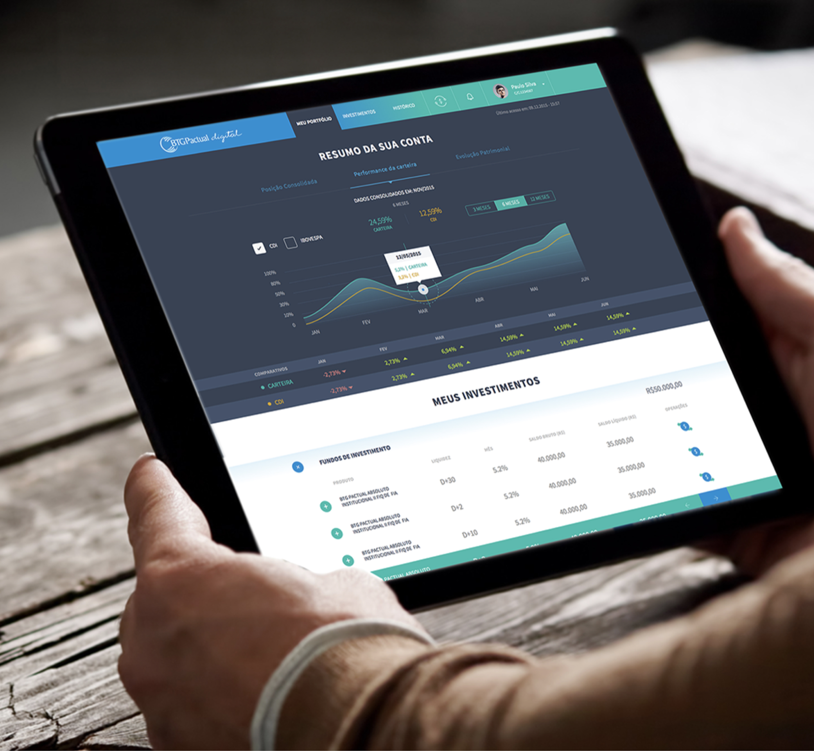

Finance · Fjord · São Paulo
BTG Pactual
BTG Pactual
Digital
A new investment management experience — designed from onboarding to portfolio tracking for desktop and tablet users of Brazil's largest investment bank.
A new investment management experience — designed from onboarding to portfolio tracking for desktop and tablet users of Brazil's largest investment bank.
Company
BTG Pactual is Brazil's largest investment bank, providing asset management services through investment funds and managed portfolios. As it moved to digitalise its offering, it needed a platform experience that matched the sophistication of its products.
Scope
The Platform
The core platform gives investors a comprehensive view of their portfolio performance, fund allocations, and investment history.
Key features include real-time portfolio performance charts with benchmark comparisons (CDI, Ibovespa), fund-by-fund breakdown, historical returns, and a clear investment summary — all designed for clarity and sophistication.
The tablet-first approach ensured that investors could manage their portfolios comfortably from anywhere — on the go, at meetings, or at home.

Onboarding
The onboarding experience was designed to reduce friction and build trust from the very first interaction.
BTG Pactual's investment products are sophisticated — but the onboarding needed to feel approachable. We designed a step-by-step flow that collected necessary KYC information, established the investor's profile, and made a first investment recommendation — all while maintaining the brand's premium positioning.